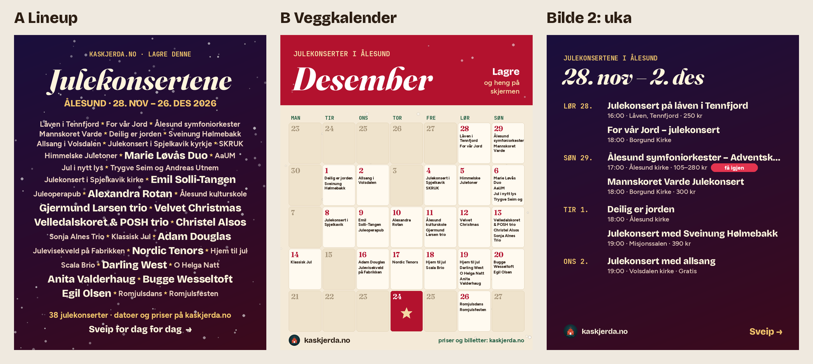
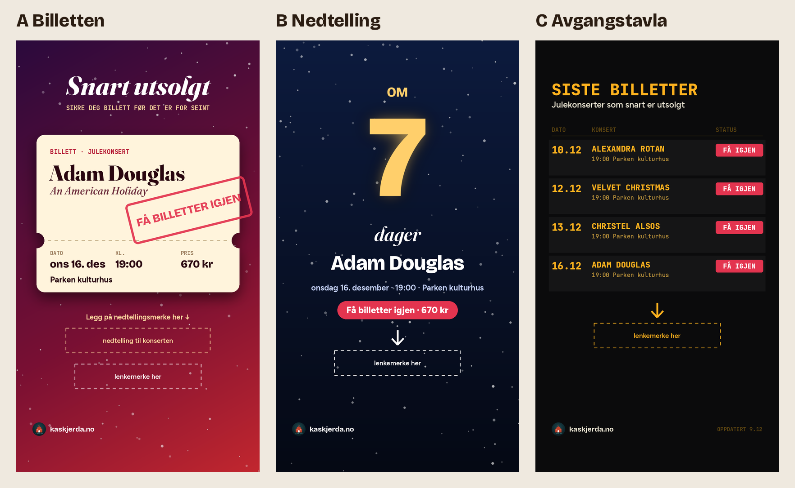
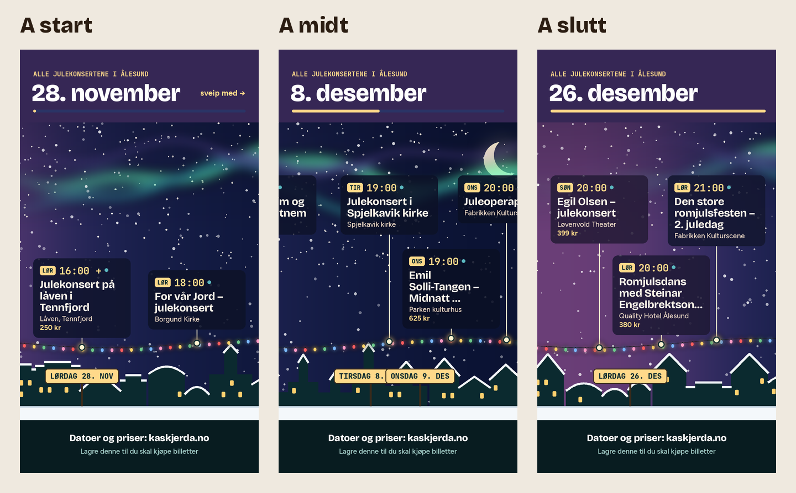
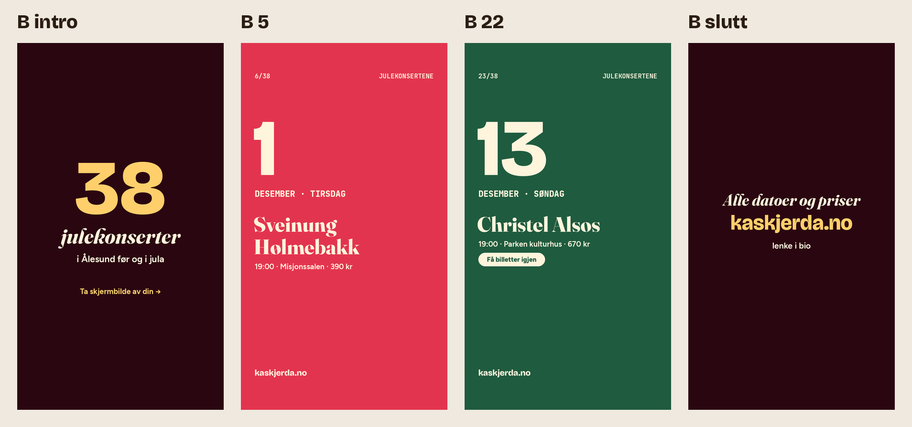

Julekonsertene på Instagram
Forslag fra 24. nov. 2026, laget av forslag.py med ekte data. Utsolgte konserter er ikke med. Ingenting valgt ennå. «Luke X»-historien (samme dag) ble lagt bort fordi folk kjøper julekonsertbilletter i god tid.
2 Plakaten «Alle julekonsertene» (innlegg som folk lagrer)
A Lineup (festivalplakat, store scener i stor skrift) eller B Veggkalender. Etter forsiden følger listebilder med noen dager om gangen.

3 «Snart utsolgt»-historien
Lages når en julekonsert får «Få billetter igjen». A Billetten med stempel og plass til Instagrams nedtellingsmerke, B Nedtelling, C Avgangstavla med alle som snart er utsolgt.

4 Reel
A «Desember i ett sveip»: panoramaet glir gjennom alle konsertene på ca. 35 sekunder. B Rask klipp: én konsert per taktslag (0,6 s), ca. 27 sekunder. Videoene ligger ikke i git.

